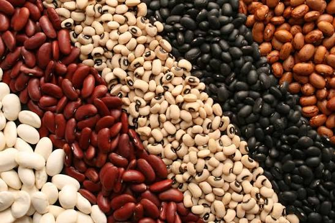

Hunger Erasure
Plant today, Grow tomorrow a hunger free world
Join our international community with hundreds of people giving advice and comments that significantly enhance farming
Join communityView comments
About
Hunger Erasure is a purpose driven agricultural company dedicated to helping communities grow their own food and create a more food secure future. We provide high quality seeds that are fully nature grow from our gardens with nothing but natural fertilizers and good growing practices. We work from family level to world level, meaning we provide our services from an individual to continents which implies high service quality provision.
Goal
Hunger remains a challenge for many communities, while some people have land but lack access to good quality seeds, reliable information, or the resources needed to grow successfully. Hunger Erasure exists to bridge that gap. Our goal is to contribute to hunger free future by making quality seeds, agricultural knowledge, and farming resources more accessible.
Welcome to Hunger Erasure official website
Checkout more seeds
Corn

Tomato

Beans

Lettuce
With candor at it's pinnacle
At Hunger Erasure, offer a variety of quality seeds for different farming needs. whether you want to grow familiar local crops, preserve indigenous varieties, or try something exotic, we have something for you.
1kg-maize______UGX5,000
50g-tomatoes______UGX4,000
1kg-beans______UGX6,000
25g-lettuce______UGX3,000
MoreOur clients couldn't help it but say
Am surely seeing a very significant difference between other seeds and Erasure's, like they are much better.
Am very happy with the seeds I bought from Erasure, they are of high quality and germinated very well.
Erasure's seeds are the best I've ever used, they are healthy and produced a great yield.